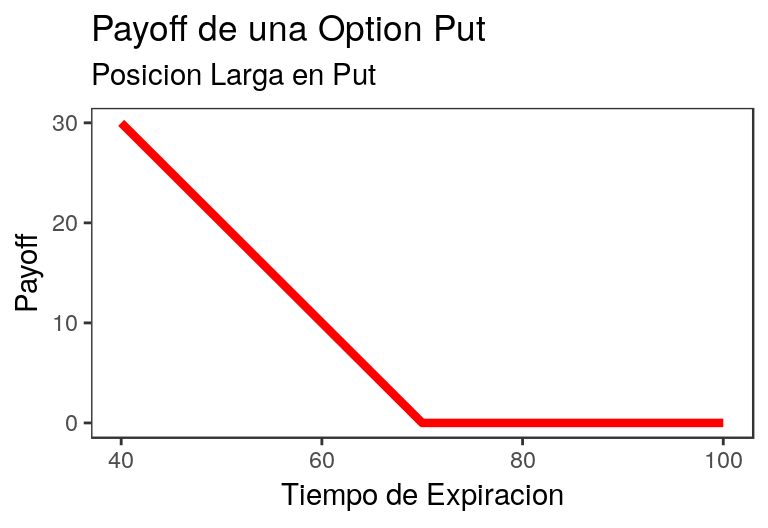

Capítulo 5 Opciones, Derivados y Futuros
IMPORTANTE: Aún no está del todo listo el formato en pdf, por lo que recomiendo verlo online.
if(!require("pacman")) install.packages("pacman")
p_load("tidyverse","quantmod")5.1 Call & Put
A modo de resumen, existen cuatro tipos de posiciones en las opciones:
- Posición larga en una opción de compra (call)
- Posición larga en una opción de venta (put)
- Posición corta en una opción de compra (call)
- Posición corta en una opción de venta (put)
Simulamos nuestro \(S_t\):
# Valores para el ejemplo
s <- seq(0,130,by=10) # Precio - Para la call usamos: v (precio de la call) = $5, precio de ejercicio (k) = 100.
- Para la put usamos: v (precio de la put) = $7, precio de ejercicio (k) = 70.
5.1.1 Posición Larga en Call: Payoff & Profit
EL rendimiento proveniente de una opción larga en una opción de compra europea es:
Payoff opción call larga
\[ \text{payoff} = \text{max}(S_t - k,0) \]
Profit opción call larga \[ \text{profit} = \text{payoff} - v*e^{-r*t} \]
Construimos la función:
long.callpayoff <- function(s,k,v,r,t){
data.frame("payoff" = pmax(0,s-k), "periodo" = s) %>%
mutate("profit" = payoff - v*exp(-r*t))
}payoff.longcall <- long.callpayoff(s,100,5,0,0)Gráfico posición larga en call:
g1 <- ggplot(payoff.longcall) + geom_line(aes(x = periodo, y = payoff), colour="red", size=1.5) + xlab("Tiempo de Expiracion") + ylab("Payoff")
g1 <- g1 + theme_bw() + ggtitle("Payoff de una Option Call")
g1 <- g1 + labs(subtitle = "Posicion Larga en Call")
g1 <- g1 + scale_x_continuous(limits=c(70, 130)) + theme(panel.grid.major = element_blank(), panel.grid.minor = element_blank())
g1
Para corroborar el gráfico ver la figura 9.1 (capítulo 9) del libro Introducción a los Mercados de Futuros y Opciones (octava edición).
Para efecto de académicos restringimos la escala del eje x e y (dimensión).
Gráfico profit posición larga en call:
g2 <- ggplot(payoff.longcall) + geom_line(aes(x = periodo, y = profit), colour="red", size=1.5) + xlab("Tiempo de Expiracion") + ylab("Profit")
g2 <- g2 + theme_bw() + ggtitle("Profit de una Option Call") + labs(subtitle = "Posicion Larga en Call")
g2 <- g2 + geom_hline(yintercept=0, linetype="dashed",color = "blue", size=1.5)
g2 <- g2 + scale_x_continuous(breaks = round(seq(min(payoff.longcall$periodo), max(payoff.longcall$periodo), by = 10),1),limits=c(70, 130)) + scale_y_continuous(breaks = round(seq(min(payoff.longcall$profit), max(payoff.longcall$profit), by = 10),1),limits = c(limits=c(-5, 30)))
g2 <- g2 + theme(panel.grid.major = element_blank(), panel.grid.minor = element_blank())
g2
5.1.2 Posición larga en put: Payoff & Profit
EL rendimiento para el tenedor de una opción larga en una opción de venta europea:
Payoff opción put larga: \[ \text{payoff} = \text{max}(k - S_t,0) \]
Profit opción put larga: \[ \text{profit} = \text{payoff} - v*e^{-r*t} \]
Construimos la función:
long.putpayoff <- function(s,k,v,r,t){
data.frame("payoff" = pmax(k-s,0), "periodo" = s) %>%
mutate("profit" = payoff - v*exp(-r*t))
}payoff.longput <- long.putpayoff(s,70,7,0,0)Gráfico posición larga en put
g3 <- ggplot(payoff.longput) + geom_line(aes(x = periodo, y = payoff), colour="red", size=1.5) + xlab("Tiempo de Expiracion") + ylab("Payoff")
g3 <- g3 + theme_bw() + ggtitle("Payoff de una Option Put") + labs(subtitle = "Posicion Larga en Put")
g3 <- g3 + scale_x_continuous(limits=c(40, 100)) + scale_y_continuous(limits=c(0, 30)) + theme(panel.grid.major = element_blank(), panel.grid.minor = element_blank())
g3
Para corroborar el gráfico ver la figura 9.2 (capítulo 9) del libro Introducción a los Mercados de Futuros y Opciones (octava edición).
Para efecto de académicos restringimos la escala del eje x e y (dimensión).
Gráfico posición larga en put:
g4 <- ggplot(payoff.longput) + geom_line(aes(x = periodo, y = profit), colour="red", size=1.5) + xlab("Tiempo de Expiracion") + ylab("Profit")
g4 <- g4 + theme_bw() + ggtitle("Profit de una Option Put") + labs(subtitle = "Posicion Larga en Put")
g4 <- g4 + geom_hline(yintercept=0, linetype="dashed",color = "blue", size=1.5)
g4 <- g4 + scale_x_continuous(breaks = round(seq(min(payoff.longput$periodo), max(payoff.longput$periodo), by = 10),1),limits=c(40, 100)) + scale_y_continuous(breaks = round(seq(min(payoff.longput$profit), max(payoff.longput$profit), by = 10),1),limits = c(limits=c(-7, 30)))
g4 <- g4 + theme(panel.grid.major = element_blank(), panel.grid.minor = element_blank())
g4
5.1.3 Posición corta en call: Payoff & Profit
EL rendimiento para el tenedor de una posición corta en una opción de compra europea es:
Payoff opción call corta:
\[ \text{payoff} = -\text{max}(S_t - k,0) = \text{min}(k - S_t,0) \]
Profit opción call corta:
\[ \text{profit} = \text{payoff} + v*e^{-r*t} \]
Construimos la función:
short.callpayoff <- function(s,k,v,r,t){
data.frame("payoff" = pmin(k-s,0),"periodo" = s) %>%
mutate("profit" = payoff + v*exp(-r*t))
} payoff.shortcall <- short.callpayoff(s,100,5,0,0)Gráfico posición corta en call
g5 <- ggplot(payoff.shortcall) + geom_line(aes(x = periodo, y = payoff), colour="red", size=1.5) + xlab("Tiempo de Expiracion") + ylab("Payoff")
g5 <- g5 + theme_bw()+ ggtitle("Payoff de una Option Call") + labs(subtitle = "Posicion Corta en Call")
g5 <- g5 + scale_x_continuous(limits=c(70, 130)) + scale_y_continuous(limits=c(-30, 0)) +
theme(panel.grid.major = element_blank(), panel.grid.minor = element_blank())
g5Para corroborar el gráfico ver la figura 9.3 (capítulo 9) del libro Introducción a los Mercados de Futuros y Opciones (octava edición).
Para efecto de académicos restringimos la escala del eje x e y (dimensión).
Gráfico posición corta en call:
g6 <- ggplot(payoff.shortcall) + geom_line(aes(x = periodo, y = profit), colour="red", size=1.5) +
xlab("Tiempo de Expiracion") + ylab("Profit")
g6 <- g6 + theme_bw() + ggtitle("Profit de una Option Call") + labs(subtitle = "Posicion Corta en Call")
g6 <- g6 + geom_hline(yintercept=0, linetype="dashed",color = "blue", size=1.5)
g6 <- g6 + scale_x_continuous(breaks = round(seq(min(payoff.shortcall$periodo), max(payoff.shortcall$periodo), by = 10),1),limits=c(70, 130)) + scale_y_continuous(breaks = round(seq(min(payoff.shortcall$profit), max(payoff.shortcall$profit), by = 10),1),limits = c(limits=c(-30, 5)))
g6 <- g6 + theme(panel.grid.major = element_blank(), panel.grid.minor = element_blank())
g65.1.4 Posición corta en put: Payoff & Profit
EL rendimiento para el tenedor de una posición corta en una opción de venta europea es:
Payoff opción put corta: \[ \text{payoff} = -\text{max}(k - S_t,0) = \text{min}(S_t - k,0) \]
Profit opción put corta:
\[ \text{profit} = \text{payoff} + v*e^{-r*t} \]
Construimos la función:
short.putpayoff <- function(s,k,v,r,t){
data.frame("payoff" = pmin(s-k,0),"periodo" = s) %>%
mutate("profit" = payoff + v*exp(-r*t))
}payoff.shortput <- short.putpayoff(s,70,7,0,0)Gráfico posición corta en call:
g7 <- ggplot(payoff.shortput) + geom_line(aes(x = periodo, y = payoff), colour="red", size=1.5) + xlab("Tiempo de Expiracion") + ylab("Payoff")
g7 <- g7 + theme_bw() + ggtitle("Payoff de una Option Put") + labs(subtitle = "Posicion Corta en Put")
g7 <- g7 + scale_x_continuous(limits=c(40, 100)) + scale_y_continuous(limits=c(-30, 0)) +
theme(panel.grid.major = element_blank(),panel.grid.minor = element_blank())
g7
Para corroborar el gráfico ver la figura 9.4 (capítulo 9) del libro Introducción a los Mercados de Futuros y Opciones (octava edición).
Para efecto de académicos restringimos la escala del eje x e y (dimensión).
g8 <- ggplot(payoff.shortput) + geom_line(aes(x = periodo, y = profit), colour="red", size=1.5) + xlab("Tiempo de Expiracion") + ylab("Profit")
g8 <- g8 + theme_bw() + ggtitle("Profit de una Option Put") + labs(subtitle = "Posicion Corta en Put")
g8 <- g8 + geom_hline(yintercept=0, linetype="dashed",color = "blue", size=1.5)
g8 <- g8 + scale_x_continuous(breaks = round(seq(min(payoff.shortput$periodo), max(payoff.shortput$periodo), by = 10),1),limits=c(40, 100)) + scale_y_continuous(breaks = round(seq(min(payoff.shortput$profit), max(payoff.shortput$profit), by = 10),1),limits = c(limits=c(-30, 7)))
g8 <- g8 + theme(panel.grid.major = element_blank(), panel.grid.minor = element_blank())
g8 5.2 Estrategias
Una estrategia de negociación de diferenciales implica tomar una posición en dos o más opciones del mismo tipo (dos o más opciones de compra o dos o más opciones de venta). Las más conocidas son:
- Diferenciales Alcistas (bull spreads)
- Diferenciales bajistas (bear spreads)
- Estrategias con opciones de tipo mariposa (butterfly spread)
Diferenciales Alcistas (bull spreads):
Este se crea mediante la adquisición de una opción de compra europea sobre una acción, con cierto precio de ejercicio, y la venta de una opción de compra europea sobre la misma acción con un precio de ejercicio más alto. Ambas opciones tienen la misma fecha de expiración.
5.2.1 Bull Spread Utilidades
| Intervalo variación precio acción | Beneficio derivado de call larga | Beneficio derivado de call corta | Beneficio total |
|---|---|---|---|
| \(S_t \leq K_1\) | 0 | 0 | 0 |
| \(K_1 < S_t < K_2\) | \(S_t - K_1\) | 0 | \(S_t - K_1\) |
| \(S_t \geq K_2\) | \(S_t - K_1\) | \(K_2 - S_t\) | \(K_2 - K_1\) |
Ejemplo Bull Spread:
Un inversionista adquiere en 3 una opción de compra a tres meses con un precio de ejercicio de 30, y vende en 1 un opción de compra a tres meses con un precio de ejercicio de 35. El beneficio derivado de esta estrategia de diferencial alcista es de 5 si el precio de la acción está por arriba de 35, y de cero si está por debajo de 30. Si el precio de la acción se encuentra entre 30 y 35, el beneficio es la cantidad en la cual el precio de ejercicio excede de 30. El costo de la estrategia es 3 - 1 = 2. Por lo tanto, la utilidad es:
| Intervalo variación precio acción | Utilidad |
|---|---|
| \(S_t \leq 30\) | -2 |
| \(30 < S_t < 35\) | \(S_t - 32\) |
| \(S_t \geq 35\) | +3 |
5.2.2 Función Bull Spread
Comenzamos contruyendo la estructura de la estrategia:
bullspread.call <- function(S,K1,K2,precio1,precio2){
if(K1>=S) stop("K1 debe ser menor a S.")
if(S>=K2) stop("K2 debe ser mayor a S.")
#larga
callP1 = precio1
#corto
callP2 = precio2
stock=unique(round(seq(0,K1,length.out=6)))
stock=c(stock,round(seq(K1,K2,length.out=4)))
stock=c(stock,round(seq(K2,K2+K1,length.out=6)))
stock=unique(stock)
payoff=rep(0,length(stock))
profit=rep(0,length(stock))
for(i in 1:length(stock)){
if(stock[i]<=K1) payoff[i]=0
if(stock[i]>=K2) payoff[i]=K2-K1
if(stock[i]<K2 & stock[i]>K1) payoff[i]=stock[i]-K1
profit[i]=payoff[i]+(callP2-callP1)
}
data <- data.frame(stock,payoff,profit)
return(data)
} 5.2.3 Posición call Larga & Corta Para el Bull Spread Call
Para ilustrar calculamos las dos call (larga y corta):
Es la misma función vista anteriormente, solo que en vez de tener una columna llamada “periodo” ahora será “stock”, conceptualmente es lo mismo, pero facilita para graficar:
# Posición larga en call
long.callpayoff <- function(s,k,v,r,t){
data.frame("payoff" = pmax(0,s-k), "stock" = s) %>%
mutate("profit" = payoff - v*exp(-r*t))
}
# Posición corta en call
short.callpayoff <- function(s,k,v,r,t){
data.frame("payoff" = pmin(k-s,0),"stock" = s) %>%
mutate("profit" = payoff + v*exp(-r*t))
} 5.2.4 Construcción de la Bull Spread Call
En el Global Environment vemos el objeto `bull.spread``, que tiene los stock (\(S_t\)), payoff y profit.
bull.spread <- bullspread.call(32,30,35,3,1)# Extraemos la St
s <- bull.spread$stock
# Call larga
long.call <- long.callpayoff(s,30,3,0,0)
# Call corta
short.call <- short.callpayoff(s,35,1,0,0)5.2.5 Gráfico Bull Spread Call
g1 <- ggplot(bull.spread[4:10,]) + geom_line(aes(long.call$stock[4:10],long.call$profit[4:10],color = "blue"),linetype="dashed"
,size=1)
g1 <- g1 + geom_line(aes(short.call$stock[4:10],short.call$profit[4:10], color = "red"),linetype="dashed",size=1)
g1 <- g1 + geom_line(aes(bull.spread$stock[4:10],bull.spread$profit[4:10],color = "green"),size=1)
g1 <- g1 + ggtitle("Estrategia Bull Spreads") + xlab("stock") + ylab("Profit") + theme_bw()
g1 <- g1 + geom_hline(yintercept=0, linetype="dashed",color = "orange", size=1)
g1 <- g1 + scale_color_manual(name = " ",labels = c("Call larga", "Bull Spread", "Call corta"),values = c("blue"="blue","green"="green","red" = "red"))
g1 <- g1 + theme(panel.grid.major = element_blank(), panel.grid.minor = element_blank(),legend.position="bottom")
g1 5.2.6 Con librería la Bull Spread Call
Una librería útil para construir estratégias es la librería FinancialMath, recuerden install.packages("FinancialMath") y luego library("FinancialMath"):
# Con librería
# bull.call(S,K1,K2,r,t,price1,price2,plot=FALSE)
library("FinancialMath")
bull.call <- bull.call(31,30,35,0.0000001,3,3,1,plot=TRUE)Otras funciones son, bear.call(),straddle(),strangle(),butterfly.spread().
NB: Es importante que el \(S_t\) debe estar entre \(k_1\) y \(k_2\). Deben incluir una tasa de interés y un T, pero si no se especifica, agreguen una cerca a cero.
5.2.7 Con librería El gráfico Bull Spread Call
5.2.8 Payoff inferior Bull Spread Call de la Librería
Los payoff inferiores deberían ser igual a -2:
head(bull.call$Payoff,4)| Stock Price | Payoff | Profit |
|---|---|---|
| 0 | 0 | -2 |
| 6 | 0 | -2 |
| 12 | 0 | -2 |
| 18 | 0 | -2 |
5.2.9 Payoff superior Bull Spread Call de la Librería
Los payoff inferiores deberían ser igual a 3:
tail(bull.call$Payoff,4)| Stock Price | Payoff | Profit | |
|---|---|---|---|
| 11 | 47 | 5 | 3 |
| 12 | 53 | 5 | 3 |
| 13 | 59 | 5 | 3 |
| 14 | 65 | 5 | 3 |
5.3 Black & Scholes
5.3.1 Black & Scholes: de la formula a una función
Las Formulas de Black Scholes y Merton para los precios de las opciones de compra y de venta europeas sobre acciones que no pagan dividendos son:
Formulas de Valuación Black,Scholes & Merton
- \(c = S_0 N(d_1) - K e^{-rt} N(d_2)\)
- \(p = K e^{-rt} N(-d_2) - S_0 N(-d_1)\)
donde:
- \(d_1 = \frac{ln(S_0/K) + (r + \sigma^2 / 2)T}{\sigma \sqrt{T}}\) \
- \(d_2 = \frac{ln(S_0/K) + (r - \sigma^2 / 2)T}{\sigma \sqrt{T}} = d_1 - \sigma \sqrt{T}\)
5.3.2 Black & Scholes: Ejercicio
Uso de la formula en R:
El precio de las acciones después de seis meses a partir de la expiración de una opción es de 42, el precio de ejercicio de la opción es de 40, la tasa de interés libre de riesgo es de 10% anual y la volatilidad es de 20% anual. Esto Significa:
# Parámetros
S0 <- 42
K <- 40
r <- 0.1
T <- 1/2
sigma <- 0.25.3.3 Black & Scholes: Función
Construimos la función basándonos en la formula:
bs.opm <- function(S,K,T,riskfree,sigma,type){
d1<-(log(S/K)+(riskfree+0.5 * sigma^2) * T)/(sigma * sqrt(T))
d2<-d1-sigma * sqrt(T)
if(type=="Call"){
opt.val<-S * pnorm(d1)-K * exp(-riskfree * T) * pnorm(d2)
}
if(type=="Put"){
opt.val<-K * exp(-riskfree * T) * pnorm(-d2)-S * pnorm(-d1)
}
opt.val
}# Para la call
C <- bs.opm(S = S0, K = K, T = T, riskfree = r, sigma = sigma, type = "Call" )
C## [1] 4.759# Para la put
C <- bs.opm(S = S0, K = K, T = T, riskfree = r, sigma = sigma, type = "Put" )
C## [1] 0.80865.3.4 Black & Scholes: Ahora con librerías
La librería que se utilizará para usa BS es fOptions, recordar el install.packages("fOptions") y posterior library("fOptions").
library("fOptions") La función de la librería es GBSOption():
GBSOption(TypeFlag = " ", S = S0, X = K, Time = T, r = r, b = r, sigma = sigma)En TypeFlag, va “c” para call y “p” para put, tener presente que deberán seleccionar un b que es el annualized cost-of-carry rate, si no se especifica, debe ser igual a r.
# Con libreria call
GBSOption(TypeFlag = "c", S = S0, X = K, Time = T, r = r, b = r, sigma = sigma)@price## [1] 4.759# Con libreria put
GBSOption(TypeFlag = "p", S = S0, X = K, Time = T, r = r, b = r, sigma = sigma)@price## [1] 0.80865.4 Black & Scholes con Datos Reales
5.4.1 Black & Scholes con Datos Reales: Pasos
Una manera de trabajar con datos reales directo usando R, es:
Usar las funcion
getOptionChainde la libreríaquantmod. Seleccionar las call y put para la fecha de valuación (recomiendo en objetos separados).Usar la función
getSymbolsde la libreríaquantmodpara elegir el ticker correspondiente, calcular el retorno y extraer el precio a la fecha que se está haciendo la valuación.“Construimos”" la fecha de expiración y valuación, esto nos permite calcular el \(T\) a través de: \(\frac{\text{expiración - valuación}}{365}\). La tasa libre de riesgo se puede obtener de FRED usando la 3-Month Constant Maturity Treasury yield (debe ser la fecha de valuación, un único valor).
Para la volatilidad se puede usar la desviación estándar de los últimos 3 años multiplicado por 252, esto se hace para anualizarlo.
Finalmente seleccionamos las que están cerca al at the money y usamos Black & Scholes, por librería o bien la función que creamos.
5.4.2 Parte a
Imaginemos que es 31 de mayo del 2018 y queremos valorar las opciones call y put de Oracle con vencimiento al 17 de Agosto del 2018. Para comenzar usamos la función getOptionChain() de la librería quantmod:
opciones <- getOptionChain("ORCL",Exp="2021-01-15")
calls <- opciones$calls[,c(1:2,4:6)] # Nos quedamos con las columnas del 1 al 2 y del 4 al 6.
puts <- opciones$puts[,c(1:2,4:6)] # Nos quedamos con las columnas del 1 al 2 y del 4 al 6.5.4.3 Parte b
Como debemos obtener el precio de cierre para el 31 de mayo del 2018 y a su vez el histórico de tres años para la volatilidad usamos:
# Al 31 de mayo la valuación, 31 de mayo del 2015 fue domingo, por ende, usamos el viernes 29
getSymbols("ORCL", from = "2015-05-29", to = "2018-06-01", periodicity = "daily")## [1] "ORCL"orcl <- as.data.frame(ORCL) %>% # a data.frame
mutate(ret = log(ORCL.Adjusted/lag(ORCL.Adjusted))) %>% # construimos el retorno
select(ORCL.Adjusted,ret) %>% # Seleccionamos el retorno y precio de ajuste
na.omit() # por el NA que se produce del retorno
# extraemos el precio a la fecha que nos piden
precio <- tail(orcl$ORCL.Adjusted,1)5.4.4 Parte c y d
Con la función getSymbols usamos la fuente de la FRED y extraemos la rf con subset.
getSymbols("DGS3MO",src ="FRED", to = "2018-06-01", periodicity = "daily")## [1] "DGS3MO"rf <- as.numeric(subset(DGS3MO["2018-05-31"]))*0.01
expiracion.date <- as.Date("2018-08-17")
valuacion.date <- as.Date("2018-06-01")
TTM <- as.numeric((expiracion.date-valuacion.date)/365)Extraemos del objeto orcl y calculamos su desviación estándar, luego se multiplica por 252.
vol.hist <- sd(orcl$ret)*sqrt(252)5.4.5 Parte e
Vemos el precio a la fecha la valuación y seleccionamos aquellas cercana a estar at the money, tanto put como call.
bs.call <- calls %>%
dplyr::filter(Strike == 45 | Strike == 50) %>%
select(Strike,Last,Bid,Ask)
bs.put <- puts %>%
dplyr::filter(Strike == 45 | Strike == 50) %>%
select(Strike,Last,Bid,Ask)# call
GBSOption(TypeFlag = "c", S = precio, X = 45, Time = TTM, r = rf, b = rf, sigma = vol.hist)@price## [1] 1.351GBSOption(TypeFlag = "c", S = precio, X = 50, Time = TTM, r = rf, b = rf, sigma = vol.hist)@price## [1] 0# put
GBSOption(TypeFlag = "p", S = precio, X = 45, Time = TTM, r = rf, b = rf, sigma = vol.hist)@price## [1] 0GBSOption(TypeFlag = "p", S = precio, X = 50, Time = TTM, r = rf, b = rf, sigma = vol.hist)@price## [1] 3.6295.5 Árbol Binomial
Generalización
Una generalización cuando queremos realizar un árbol con dos pasos:
- \(p = \frac{e^{r \Delta t} - d}{u - d}\)
- \(f_u = e^{-r \Delta t} [pf_{uu} + (1-p) f_{ud}]\)
- \(f_d = e^{-r \Delta t} [pf_{ud} + (1-p) f_{dd}]\)
\(f = e^{-r \Delta t} [pf_{u} + (1-p) f_{d}] = e^{-2r \Delta t} [p^2 f_{uu} + 2p(1-p) f_{ud} + (1-p)^2 f_{dd}]\) esto último solo cuando es una opción europea.
No obstante, en términos del modelo, \(u = e^{\sigma \sqrt{\Delta t}}\) y \(d = e^{-\sigma \sqrt{\Delta t}} = \frac{1}{u}\).
5.5.1 Ejercicio
Considere una call europea a dos años con precio de strike de 52 en una acción cuyo precio es 50. Suponga que existen two time steps en un año, y en cada time steps el precio se mueve 30%. La tasa de interes libre de riesgo es 5%.
La librería a usar será de nuevo fOptions.
library("fOptions")5.5.2 Call europea
# Europea
CRRTree = BinomialTreeOption(TypeFlag = "ce", S = 50, X = 52, Time = 2, r = 0.05, b = 0.05, sigma = 0.3, n = 2)
CRRTreeBinomialTreePlot(CRRTree, dy = 1, cex = 0.8, ylim = c(-6, 7), xlab = "n", ylab = "valores Opción")
title(main = "Arbol Binomial Opción")5.5.3 Call europea gráfico
5.5.4 Call americana
# Americana
CRRTree.1 = BinomialTreeOption(TypeFlag = "ca", S = 50, X = 52, Time = 2, r = 0.05, b = 0.05,
sigma = 0.3, n = 2)
CRRTree.1BinomialTreePlot(CRRTree.1, dy = 1, cex = 0.8, ylim = c(-6, 7), xlab = "n", ylab = "valores Opción")
title(main = "Arbol Binomial Opción")5.5.5 Call americana gráfico